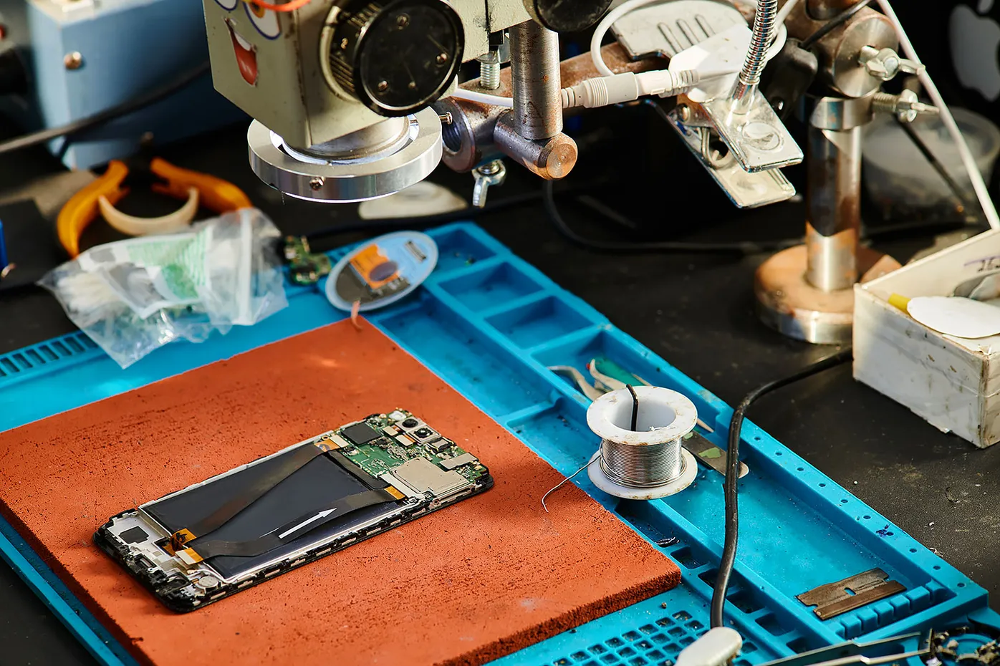

We Fix Gadgets.
Trust TechPro - Where Tech Meets Pro!
At TechPro, we are dedicated to being your go-to destination for all things mobile repair in New York. With years of expertise under our belt, our team of skilled technicians excels in diagnosing and resolving a wide array of issues plaguing your devices.
We understand the frustration that comes with a malfunctioning device, which is why we strive to provide swift and reliable solutions that get you back to enjoying your gadgets in no time.
We're not just another mobile repair service - we're your trusted partners in keeping your devices running smoothly. With over 25 years of experience serving the New York community, our mission is simple: to provide top- quality repairs and exceptional customer service.
Our team of 15 dedicated technicians brings a wealth of expertise to every repair job, ensuring that your devices are in capable hands. From cracked screens to water damage, battery issues to software glitches, we've seen it all and fixed it all.